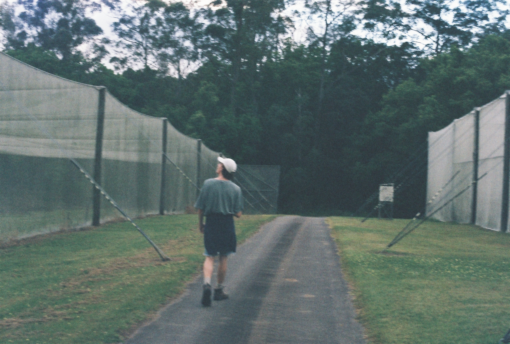

_____ _______ _____ _____ _____ _______ _____ _____ _______ _____ _____
/\ \ /::\ \ /\ \ /\ \ /\ \ /::\ \ /\ \ /\ \ /::\ \ /\ \ /\ \
/::\ \ /::::\ \ /::\____\ /::\____\ /::\ \ /::::\ \ /::\ \ /::\ \ /::::\ \ /::\ \ /::\ \
/::::\ \ /::::::\ \ /:::/ / /::::| | \:::\ \ /::::::\ \ /::::\ \ /::::\ \ /::::::\ \ /::::\ \ /::::\ \
/::::::\ \ /::::::::\ \ /:::/ _/___ /:::::| | \:::\ \ /::::::::\ \ /::::::\ \ /::::::\ \ /::::::::\ \ /::::::\ \ /::::::\ \
/:::/\:::\ \ /:::/~~\:::\ \ /:::/ /\ \ /::::::| | \:::\ \ /:::/~~\:::\ \ /:::/\:::\ \ /:::/\:::\ \ /:::/~~\:::\ \ /:::/\:::\ \ /:::/\:::\ \
/:::/ \:::\ \ /:::/ \:::\ \ /:::/ /::\____\ /:::/|::| | \:::\ \ /:::/ \:::\ \ /:::/ \:::\ \ /:::/__\:::\ \ /:::/ \:::\ \ /:::/__\:::\ \ /:::/__\:::\ \
/:::/ \:::\ \ /:::/ / \:::\ \ /:::/ /:::/ / /:::/ |::| | /::::\ \ /:::/ / \:::\ \ /:::/ \:::\ \ /::::\ \:::\ \ /:::/ / \:::\ \ \:::\ \:::\ \ \:::\ \:::\ \
/:::/ / \:::\ \ /:::/____/ \:::\____\ /:::/ /:::/ _/___ /:::/ |::| | _____ /::::::\ \ /:::/____/ \:::\____\ /:::/ / \:::\ \ /::::::\ \:::\ \ /:::/____/ \:::\____\ ___\:::\ \:::\ \ ___\:::\ \:::\ \
/:::/ / \:::\ ___\ |:::| | |:::| | /:::/___/:::/ /\ \ /:::/ |::| |/\ \ /:::/\:::\ \ |:::| | |:::| | /:::/ / \:::\ \ /:::/\:::\ \:::\____\ |:::| | |:::| | /\ \:::\ \:::\ \ /\ \:::\ \:::\ \
/:::/____/ \:::| ||:::|____| |:::| ||:::| /:::/ /::\____\/:: / |::| /::\____\ /:::/ \:::\____\|:::|____| |:::| | /:::/____/ \:::\____\/:::/ \:::\ \:::| ||:::|____| |:::| |/::\ \:::\ \:::\____\/::\ \:::\ \:::\____\
\:::\ \ /:::|____| \:::\ \ /:::/ / |:::|__/:::/ /:::/ /\::/ /|::| /:::/ / /:::/ \::/ / \:::\ \ /:::/ / \:::\ \ \::/ /\::/ |::::\ /:::|____| \:::\ \ /:::/ / \:::\ \:::\ \::/ /\:::\ \:::\ \::/ /
\:::\ \ /:::/ / \:::\ \ /:::/ / \:::\/:::/ /:::/ / \/____/ |::| /:::/ / /:::/ / \/____/ \:::\ \ /:::/ / \:::\ \ \/____/ \/____|:::::\/:::/ / \:::\ \ /:::/ / \:::\ \:::\ \/____/ \:::\ \:::\ \/____/
\:::\ \ /:::/ / \:::\ /:::/ / \::::::/ /:::/ / |::|/:::/ / /:::/ / \:::\ /:::/ / \:::\ \ |:::::::::/ / \:::\ /:::/ / \:::\ \:::\ \ \:::\ \:::\ \
\:::\ /:::/ / \:::\__/:::/ / \::::/___/:::/ / |::::::/ / /:::/ / \:::\__/:::/ / \:::\ \ |::|\::::/ / \:::\__/:::/ / \:::\ \:::\____\ \:::\ \:::\____\
\:::\ /:::/ / \::::::::/ / \:::\__/:::/ / |:::::/ / \::/ / \::::::::/ / \:::\ \ |::| \::/____/ \::::::::/ / \:::\ /:::/ / \:::\ /:::/ /
\:::\/:::/ / \::::::/ / \::::::::/ / |::::/ / \/____/ \::::::/ / \:::\ \ |::| ~| \::::::/ / \:::\/:::/ / \:::\/:::/ /
\::::::/ / \::::/ / \::::::/ / /:::/ / \::::/ / \:::\ \ |::| | \::::/ / \::::::/ / \::::::/ /
\::::/ / \::/____/ \::::/ / /:::/ / \::/____/ \:::\____\ \::| | \::/____/ \::::/ / \::::/ /
\::/____/ ~~ \::/____/ \::/ / ~~ \::/ / \:| | ~~ \::/ / \::/ /
~~ ~~ \/____/ \/____/ \|___| \/____/ \/____/
if ur
"On the EP one can find a series of deeply personal, fluid yet finely assembled synthetic arrangements from ____.1om © ™ ℗ ®
A minimalist form and technique does nothing to restrain the lush and ethereal nature of the compositions.
With controlled improvisations playing out within purposeful compositional boundaries, hypnotic textures,
drones and samples culminate to form what are electronic dirges for a world which has become increasingly
fraught with uncertainty, alienation and deterritorialisation.
Yet still these tracks offer space for listeners to rest and recuperate.
To gather themselves and reflect.
A sense of hope still prevails... “Here I am again”
- Stevan Markovic
credits
William Foley
released September 16, 2021
